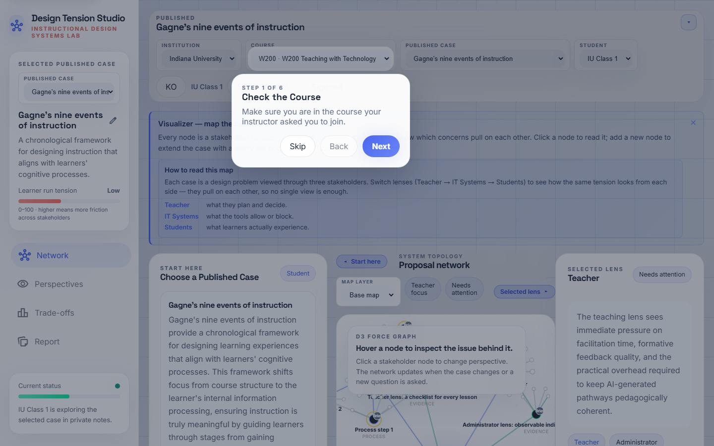
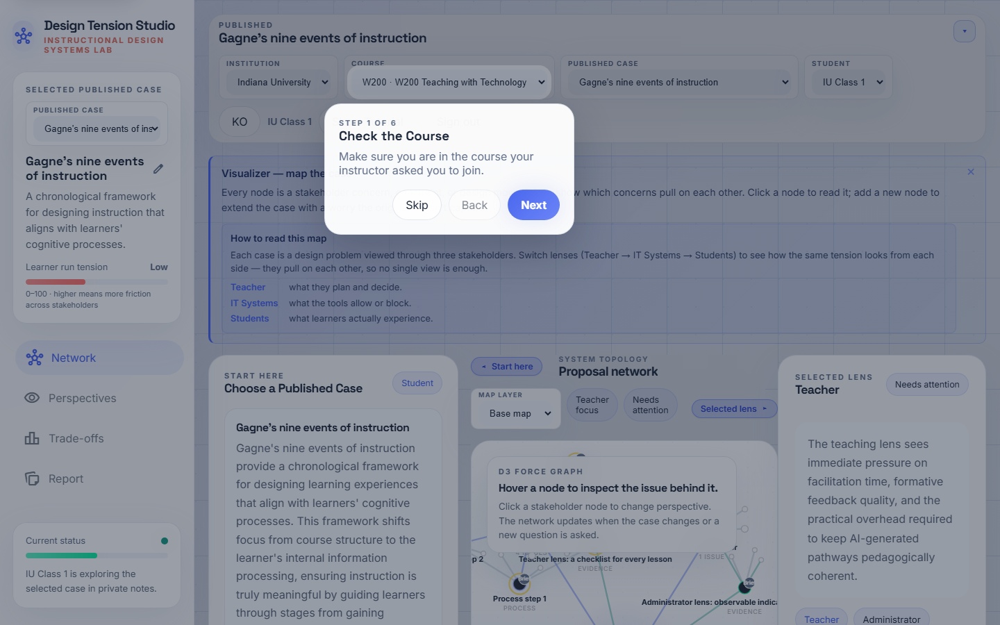

Student Learning Journey
A phase-by-phase walkthrough of how you use Swarm ID to think through an instructional-design decision — from opening a case to submitting a reflection. Each step shows what to do, what to expect, what success looks like, and where students most often get stuck.
Before You Start: What Swarm ID Is (and Isn’t)
Swarm ID is a thinking tool for instructional-design decisions, not a homework-answer engine. When you open a case, the tool has already parsed the instructor’s brief into an interactive map of stakeholders, constraints, and tensions. Your job is to treat that map as a design space you’re moving through — asking questions, pushing back on weak arguments, and adding your own thinking.
Five AI agents take different stances on every question you ask, so you’ll see disagreement, not consensus. That disagreement is the point. The goal isn’t to find “the right answer” — it’s to surface the trade-offs you’d otherwise miss, and then make a reasoned design decision you can defend in your reflection.
Orient — Find Your Course and Case
Confirm you’re in the right course, pick the case your instructor told you to open, and get a first look at what’s inside. Spend no more than three minutes here.
-
Confirm Your Course
Top bar · Course dropdownStart here. Check that the course dropdown shows the course your instructor assigned — if it doesn’t, switch courses before you pick a case. Any work you do is saved under the course you’re currently in.
Success looks likeThe dropdown reads W200 · Teaching with Technology (or whatever your instructor named it) and the case list below is populated.
Most common stumbleStudents sign in to the wrong course and can’t see the case the instructor mentioned in class. If the list looks empty, flip the course dropdown before asking for help.

Sign-in screen — the course dropdown becomes visible once you’re in. -
Scan the Case Library
Case list · title, three-line summary, Show moreThe case list shows only cases your instructor has published — drafts stay hidden. Each card shows the case title and the first three lines of the brief. Tap Show more to expand the summary without committing to opening the case.
Use this moment to get a feel for which case you’ve been assigned and what design problem it frames (ADDIE phase, 5E segment, AI/CT lesson, etc.).

Case cards truncate to three lines, with Show more and the blue Open case pill side by side. -
Open a Published Case
Case card · blue Open case pillClick the blue Open case pill on the card your instructor assigned. The app loads the brief on the left, builds the case network map in the middle, and positions the Selected-lens panel on the right.
Success looks likeYou see three zones on screen: brief (left), network map (center), selected lens (right). Everything updates together when you interact.

First-time onboarding card nudges you into the three-panel layout.
Situate — Understand the Design Problem Before You Ask Anything
Most students skip this phase and jump straight to asking the swarm. Resist that urge. You cannot ask useful questions about a design you don’t yet understand — read first, ask second. Budget 5–8 minutes.
-
Read the Case Brief First
Left panel · IntakeThe left panel holds the instructor’s brief — read it before touching the map so you understand the design problem, the learners, and the constraints in play. You’ll come back to this panel often.
Once you’ve read it, collapse the panel with the chevron to give the network map more room — the graph will visibly re-spread into the reclaimed space.
You’re ready to continue whenYou can answer three questions without looking: Who are the learners? What’s the goal? What’s the main constraint?
Most common stumbleReading the brief too fast. The map structure — clusters, edges, tensions — only makes sense once the brief is already in your head.
Intake panel on the left — brief, stakeholders, constraints. -
Explore the Case Map
Network stage · D3 force graphScan the main clusters first — stakeholders (teacher, learner, admin, IT), constraints (time, budget, accessibility), and tensions (what’s pulling against what). Hover any node to read its detail; click a stakeholder node to shift the Selected lens panel into their point of view.
Think of this as walking the perimeter of a design space before you start drawing in it. Which cluster is densest? Where are the surprising edges between stakeholders? Which constraints are the non-negotiables?

The D3 network clusters issue nodes around the stakeholders and constraints pulled from the brief.
Interrogate — Put the Design Under Pressure
Now you ask questions — but not to be answered, to be tested. The swarm is designed to disagree with itself so you can see where the real trade-offs live. Plan 10–15 minutes across two or three rounds.
-
Ask the Swarm
Composer · Ask a questionAsk one focused question — a tension you noticed, a tradeoff, or a stakeholder concern. Examples:
“How does learner autonomy conflict with teacher review load in this lesson?”
“If accessibility is a hard constraint, which part of the engagement phase do we have to redesign?”Five AI agents answer in a single round with different stances, and their agreements and disagreements get wired into the map as new edges.

Typing your first focused question. One round → five different stances. -
Compare Stances — Disagreement Is the Signal
Chat thread · multi-agent repliesRead all five replies, not just the first. Where do they agree? Where do they split? The split points are the actual design decisions you have to make.
A second classifier pass runs automatically and draws disagreement edges on the map — watch the graph re-layout as the swarm’s dissent becomes visible structure.
You’re doing it right whenYou can name at least one pair of agents that disagreed and say what the disagreement was about. If all five agents sound the same, your question was too narrow — try again.

Disagreement edges get wired into the map after the classifier pass. -
Challenge a Weak Response
Each agent reply · Challenge buttonEach agent reply has a Challenge button. Use it when a response sounds plausible but ignores something you see in the brief. Your challenge is logged, a disagreement edge is drawn from your challenge to the agent’s claim, and the swarm has to account for your objection in the next round.
This is where Swarm ID stops feeling like a chatbot and starts feeling like a design-studio critique. Push back. The tool is built to handle it.
Most common stumbleAccepting the first confident-sounding agent reply as the answer. If you never use Challenge at least once per session, you’re missing half of what the tool does.

The Challenge button appears on every agent reply.
Contribute — Make the Map Yours
Up to here you’ve been reacting to the swarm. Now you add your own thinking to the case — a private learner layer that persists between sessions and that your instructor can see in your report. Spend 5–10 minutes.
-
Add Your Own Node
Selected lens panel · Add a node (green header)Add a node for a question or issue you want to track from your own point of view — something the swarm didn’t raise, a constraint you noticed in the brief, or a design alternative you want to develop.
Your node joins a private learner layer on top of the case map. It persists between sessions, and your instructor can see it in the report. You can add several across one session.
This is what makes your work originalThe swarm generates a lot of surface. Your nodes are the record of what you decided was important.

The green Add a node form is the primary action on the right panel. -
Go 1-on-1 with a Stakeholder
Perspectives view · single-channel chatSwitch to the Perspectives view (top nav) for a single-channel chat that answers from one stakeholder’s point of view. Use it to go deeper than the multi-agent swarm round — one voice, follow-up questions, full turn-by-turn.
This is where you pressure-test a single viewpoint. How would the teacher respond if you pushed them on review load? How would the student respond if you pushed them on autonomy?
Screenshot not yet captured for the student-side Perspectives chat. Re-runnode scripts/capture-guides.mjs student enafter adding a Perspectives step to regenerate.
Synthesize — Turn the Session Into a Defensible Decision
This is where students most often under-invest and where instructors look hardest. The reflection is the difference between “I played with a tool” and “I made a reasoned instructional-design decision.” Spend 8–10 minutes.
-
Write Your Reflection, Then Submit
Report view · Reflection promptsOpen the Report view. The prompts there scaffold the move from exploration to decision: what tension did you surface, what trade-off did you accept, what design choice did you make, and why?
When you’re ready, use the Download button at the bottom to export your report or submit it to your instructor. Your private nodes, your challenges, and your reflection all ride together in the export.
A strong reflectionNames one specific design decision, cites at least one swarm disagreement or challenge as evidence, and connects back to a course concept (ADDIE phase, 5E step, CT strategy, AI integration pattern).
A weak reflectionSummarizes what the swarm said. If your reflection could be written without having used Swarm ID, you haven’t synthesized.

Report view — reflection prompts scaffold the decision. 
Download / submit the finished report.
Fallback tour step — shown only when you haven’t opened a case yet
Pick a Case to Load the Map. Pick one published case from the list above and its network map will load here. Replay the tutorial after you’ve opened a case — it will walk you through reading the brief, exploring the map, asking the swarm, challenging responses, adding your own node, and writing a reflection.
Tips for a Productive Session
- One case, two or three rounds. Don’t open four cases and ask one shallow question each. Open one case and ask three progressively sharper questions.
- Use Challenge at least once. If every agent reply looks reasonable, your question was too soft. Push back on the one that feels weakest.
- Add nodes as you go, not at the end. Capture your thinking as it happens. A node you add in the middle of a swarm round is worth three you try to reconstruct later.
- Switch to Perspectives when you want depth. The swarm is wide; Perspectives is deep. Use the swarm to find the trade-off, then Perspectives to pressure-test one side of it.
- Collapse panels you’re not using. The chevrons on the left and right panels reclaim canvas space for the map. The graph re-spreads when you collapse — that’s a feature, not a glitch.
- Write your reflection while the session is warm. Don’t close the tab and come back tomorrow. Export while the disagreements are still in your head.
How This Connects to What You’re Learning in W200
- ADDIE / 5E framing. The brief in the left panel is effectively an Analyze output; the map gives you the Design surface; your reflection sits at the transition from Design to Develop.
- Merrill’s First Principles & Gagné’s Nine Events. Use the swarm to ask where a specific event (motivation, guidance, practice, feedback) is under-served in the current design.
- Community of Inquiry. The three panels roughly mirror the three presences: brief = cognitive, Perspectives = social, your private nodes = teaching presence as you plan the intervention.
- AI & Computational Thinking. The swarm itself is an AI artifact you’re being asked to critique. Notice when it overgeneralizes, when it confabulates, when it agrees too fast — those are moments to use Challenge.
- ARCS + Gamification. Your reflection is where you connect a design move to an ARCS lever (Attention, Relevance, Confidence, Satisfaction) and say why that lever matters for your learners.